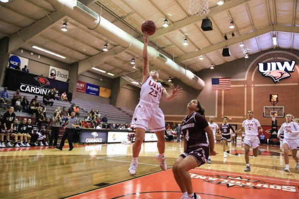
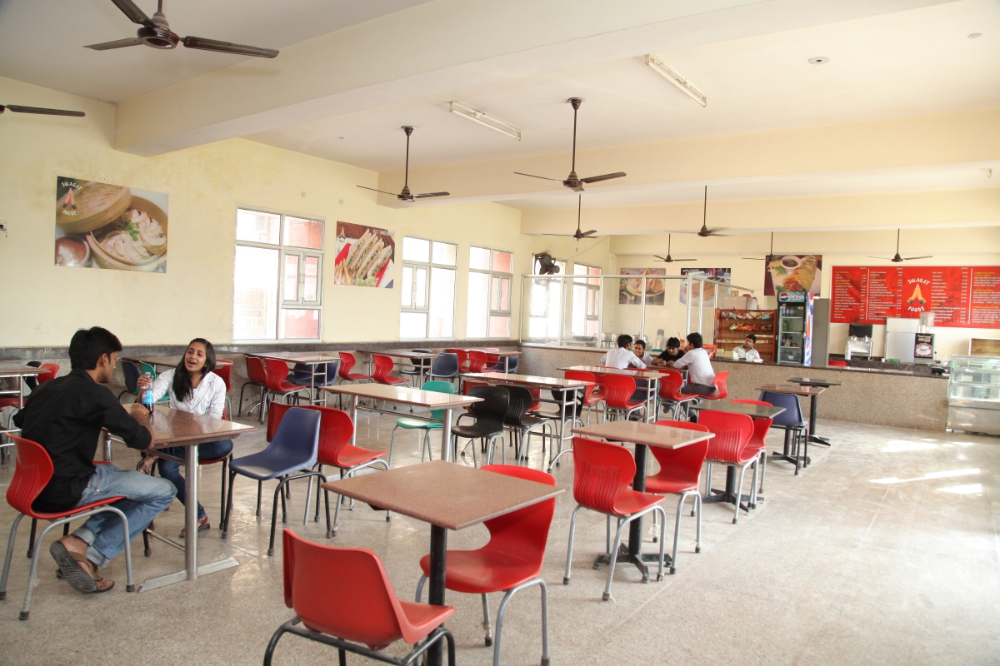

Courses We Offer
Mumbai University courses are well structured according to the industrial requirements.
It is known for offering various courses at the diploma, undergraduate, postgraduate, and doctoral levels.
Mumbai University fee structure for some of its popular courses are listed above in the table.
Under-Graduate
BE/B.TECH-CS/IT/MECH/EE/EEE/ETC.
BA/BBA/BCOM/BCA/B.Sc
Post-Graduate
ME/M.TECH-CS/IT/MECH/EE/EEE
MBA/M.Sc/MCA
Ph.D.
English/ French/ Financial studies/ Geography/ Genetics/ German/ Geology/ Hispanic/ Hindi
Our Global Campus
Mumbai University is a prestigious college that offers modern amenities to students for a better learning experience.
It has two campuses in Mumbai Kalina and another one in suburban Mumbai. The Kalina campus, located in suburban Mumbai,
is spread across 230 acres.
The Fort campus is 13 acres. The campus has virtual classrooms, a library, lecture halls, etc.
Our Facilities
The campus has virtual classrooms, a library, lecture halls, etc.

World Class Library
The Mumbai University library has books from all eras and is open for students to use.
It has a wide range of books that students can learn and use for research.

Sports Complex
Education is incomplete without sports. For this purpose, our
College organizes Annual Sports Meet every year including competition regarding indoor as well as outdoor games.

College Cafeteria
A healthy and tasty start to the day begins with the breakfast at 8am, lunch, evening snacks and dinner at 8pm,
the cafeteria serves a variety of menus which are both healthy and tasty.
What Our Students Says
The college infrastructure is pretty great. The classrooms have A/C's which makes it easier in the summers Classrooms also have WiFi for internet access.
The library is big and is very spacious. The canteen food is hygenic.
The food provided in the canteen is priced decently with a lot of choices to pick from along with an in-house CCD
Ashwini Pendse

The campus is well equipped with good infrastructure facilities. The classrooms are well lit and ventilated.
Suresh Singh
Enroll For Our Various Online courses
Anywhere from The World
CONTACT US